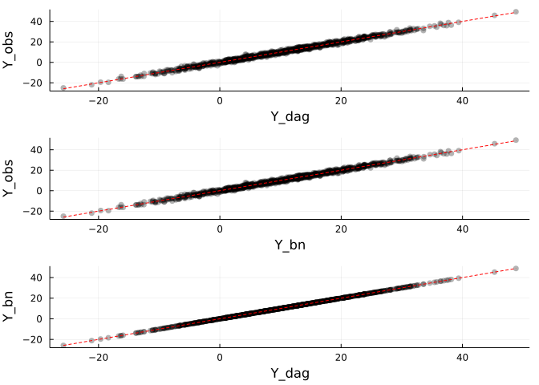

Exploring causal inference with DAGs and Bayesian models
Lately, I’ve been reading quite a lot about causal inference in statistics and the various approaches developed through the decades. Pearl’s framework, which relies on directed acyclic graphs (DAGs), resonated with me the most; I really like DAGs as a way of expressing ideas about causality, and as a tool for tackling causal questions and building causal models.
As I’ve been focused on Bayesian modeling for the past couple of years, I’ve found the generative modeling approach to be quite a useful way of approaching data analysis. The directed acyclic graph approach and the generative modeling approach seem to have a lot in common. However, I still feel like a difference is being made between the two. Because of this (and other pedagogic reasons), I’ve decided to explore some simple causal setups to gain (hopefully) a better understanding of both causal inference and the DAG/generative modeling frameworks.
Case 1 - three variables with simple confounding
The first case I’m going to look at is a simple three-variable case where one variable acts as a confounder of the causal relationships of the remaining two variables. We’ll have a variable \(X\) that exerts a causal influence on a variable \(Y\). We’ll also have a variable \(Z\) that has a causal effect on both \(X\) and \(Y\), making \(Z\) a confounder of the causal relationship between \(X\) and \(Y\). This model can be represented by the following directed acyclic graph (DAG), where each arrow represents the causal effect which the variable at the arrow’s tail has on the variable at the arrow’s head (e.g. \(X\) has a causal effect on \(Y\)):
In the graph pictured in Figure 1 there are two paths between \(X\) and \(Y.\) The first path is the direct one, going from \(X\) to \(Y\) (\(X \textrightarrow Y\)). The second path is an indirect one, and goes over the \(Z\) variable: \(X \textleftarrow Z \textrightarrow Y\).
I’ve mentioned earlier that the direction of the arrows tells us the direction of the causal effects. Therefore, we can say that the path \(X \textrightarrow Y\) is causal. However, the path \(X \textleftarrow Z \textrightarrow Y\) is not a causal path — starting from the left, we have an arrow going into \(X\) from \(Z\), and then an arrow going from \(Z\) into \(Y\). Since this path starts with an arrow pointing into \(X\), this makes it a backdoor path between \(X\) and \(Y\).
The idea of backdoor paths is one of the central ideas in Pearl’s framework. Backdoor paths are not causal, and create problems when trying to estimate causal effects. In the graph in Figure 1, we’d have to somehow close the backdoor path in order to obtain an unbiased estimate of the causal effect of \(X\) on \(Y\). In this case, the path can be closed by adjusting for the \(Z\) variable. We’ll see how to do that in a bit.
I’ll first set up the Julia environment and simulate some values for the variables \(X\), \(Z\) and \(Y\).
using Pkg
Pkg.activate("..")
using Distributions
using Random
using Statistics
using StatsModels
using Turing
using GLM
using DataFrames
using Markdown
using StatsPlots
using QuadGK
include(joinpath("..",
"helpers",
"text-formatting.jl"))
include(joinpath("..",
"helpers",
"plots.jl"))
Random.seed!(1)Now, let’s simulate data from the data-generating process described in Figure 1. For simplicity, I’ll assume all variables are distributed normally with the same standard deviation \(\sigma = 1\), but with different means. Also for simplicity, I’ll assume that the relationships between the variables can be described by a simple linear model. Therefore, we have:
\[\begin{align} Z &\sim \text{normal}(1, 1) \\ x_i &\sim \text{normal}(\mu_{x_i}, 1) \\ y_i &\sim \text{normal}(\mu_{y_i}, 1) \\ \mu_{x_i} &= 3 z_i \\ \mu_{y_i} &= 2 x_i + 4 z_i,\; \text{for}\; i \in \{1, \ldots, N\} \end{align}\]
With that in mind, I’ll simulate the data and put it in a data frame:
Z_distr = Distributions.Normal(1, 1);
N = 1000 # number of simulated draws
Z = Random.rand(Z_distr,
N)
# create X values
x_mu = 3 * Z
X_distr = Distributions.Normal.(x_mu, 1)
X = Random.rand.(X_distr)
# create Y values
y_mu = 2 * X + 4 * Z
Y_distr = Distributions.Normal.(y_mu, 1)
Y = Random.rand.(Y_distr)
d = DataFrames.DataFrame("Y" => Y,
"X" => X,
"Z" => Z)
d[1:10, :]10 rows × 3 columns
| Y | X | Z | |
|---|---|---|---|
| Float64 | Float64 | Float64 | |
| 1 | 10.5775 | 3.24194 | 0.929417 |
| 2 | 13.7239 | 4.29011 | 1.53148 |
| 3 | -1.27323 | -0.874445 | 0.193148 |
| 4 | 38.1601 | 11.2986 | 3.45699 |
| 5 | 16.9501 | 4.62647 | 2.16487 |
| 6 | 10.6161 | 3.45576 | 1.26756 |
| 7 | 26.2414 | 7.90164 | 2.74993 |
| 8 | 0.779545 | -0.624594 | 0.173979 |
| 9 | -2.50255 | -1.42419 | -0.0427524 |
| 10 | 6.94653 | 2.12588 | 0.670866 |
Linear regression and causal DAGs
I’ve mentioned earlier that we have to somehow close the backdoor path over \(Z\) if we want to get an unbiased estimate of the causal effect of \(X\) on \(Y\). Since we’re dealing with simple linear models, we’ll close the backdoor path by including \(Z\) as a predictor in a multiple linear regression model, as this will adjust for its effect.
But first, let’s fit the model without including \(Z\) to see what estimate of the causal effect of \(X\) on \(Y\) we’ll get. When simulating data, we’ve set the \(b\) coefficient for the effect of \(X\) on \(Y\) to \(b_{XY} = 2\), so what we’d expect is an estimate \(\hat{b}_{XY} \ne 2\).
(Note: I’m naming the coefficients so that the left variable in the subscript refers to the variable causing the change, and the right variable in the subscript refers to the variable being changed. Therefore, \(b_{XY}\) denotes the coefficient which represents our belief about the causal effect of \(X\) on \(Y\).)
f = StatsModels.@formula(Y ~ X)
fit_y_x = GLM.lm(f,
d)StatsModels.TableRegressionModel{LinearModel{GLM.LmResp{Vector{Float64}}, GLM.DensePredChol{Float64, LinearAlgebra.CholeskyPivoted{Float64, Matrix{Float64}}}}, Matrix{Float64}}
Y ~ 1 + X
Coefficients:
─────────────────────────────────────────────────────────────────────────
Coef. Std. Error t Pr(>|t|) Lower 95% Upper 95%
─────────────────────────────────────────────────────────────────────────
(Intercept) 0.499453 0.0696148 7.17 <1e-11 0.362844 0.636061
X 3.17275 0.0153718 206.40 <1e-99 3.14259 3.20292
─────────────────────────────────────────────────────────────────────────As can be seen, we get \(\hat{b}_{XY} = 3.17\), which is different than the value set in the simulation.
As mentioned earlier, we should be able to get an unbiased estimate of the effect of \(X\) on \(Y\) if we control for the confounder \(Z\). Therefore, let’s try fitting another model, this time including \(Z\) as a variable in the regression model alongside \(X\).
f = StatsModels.@formula(Y ~ X + Z)
fit_y_xz = GLM.lm(f,
d)StatsModels.TableRegressionModel{LinearModel{GLM.LmResp{Vector{Float64}}, GLM.DensePredChol{Float64, LinearAlgebra.CholeskyPivoted{Float64, Matrix{Float64}}}}, Matrix{Float64}}
Y ~ 1 + X + Z
Coefficients:
────────────────────────────────────────────────────────────────────────────
Coef. Std. Error t Pr(>|t|) Lower 95% Upper 95%
────────────────────────────────────────────────────────────────────────────
(Intercept) -0.00914928 0.0453893 -0.20 0.8403 -0.0982188 0.0799203
X 2.00207 0.0311896 64.19 <1e-99 1.94087 2.06328
Z 3.97688 0.100799 39.45 <1e-99 3.77908 4.17468
────────────────────────────────────────────────────────────────────────────Now we get a \(\hat{b}_{XY}\) coefficient which corresponds to the one we’ve coded up while simulating the data. The estimate of the effect of \(Z\) on \(Y\) is also in line with the value which we’ve coded up.
Bayesian networks, generative models and whatnot
Okay, now to the part that’s a bit more tricky. I want to explore the relationships between Bayesian networks and causal directed acyclic graphs. If my understanding is correct, a Bayesian network is, in a way, a subset of a causal directed acyclic graph — it encodes the relationships between the variables under investigation, but doesn’t make additional assumptions which are necessary for causal inference. However, a Bayesian network that corresponds to the true DAG should be able to provide us with unbiased estimates of the causal effects. A Bayesian network that does not correspond to the true DAG, on the other hand, should provide biased estimates of the causal effects, but should still be able to make accurate predictions. This may be a fine distinction, and is something I also aim to explore further down.
I’ll fit the model represented in Figure 2 using the Turing.jl library. The model can be coded as follows:
Turing.@model function gen_model_y_xz(X,
Y,
Z)
s_X ~ Turing.Exponential(1)
s_Y ~ Turing.Exponential(1)
mu_z ~ Turing.Normal(2, 1)
s_Z ~ Turing.Exponential(1)
Z ~ Turing.Normal(mu_z, s_Z)
b_ZX ~ Turing.Normal(2, 1)
b_XY ~ Turing.Normal(2, 1)
b_ZY ~ Turing.Normal(2, 1)
for i in eachindex(X)
X[i] ~ Turing.Normal(Z[i] * b_ZX,
s_X)
Y[i] ~ Turing.Normal(X[i] * b_XY + Z[i] * b_ZY,
s_Y)
end
endgen_model_y_xz (generic function with 2 methods)Next, we use the NUTS sampler (the same one Stan is using) to get samples from the posterior distribution:
chains = Turing.sample(gen_model_y_xz(d.X,
d.Y,
d.Z),
Turing.NUTS(1000,
0.80),
Turing.MCMCThreads(),
3000,
4)
MCMCChains.summarystats(chains)Summary Statistics parameters mean std naive_se mcse ess rhat ⋯ Symbol Float64 Float64 Float64 Float64 Float64 Float64 ⋯ s_X 1.0270 0.0231 0.0002 0.0002 11048.3436 1.0000 ⋯ s_Y 1.0090 0.0226 0.0002 0.0002 12533.8524 0.9998 ⋯ mu_z 1.0353 0.0327 0.0003 0.0003 11445.4768 1.0003 ⋯ s_Z 1.0293 0.0229 0.0002 0.0002 11446.8643 1.0004 ⋯ b_ZX 3.0249 0.0224 0.0002 0.0002 11874.1650 0.9999 ⋯ b_XY 2.0084 0.0310 0.0003 0.0004 7162.2305 0.9999 ⋯ b_ZY 3.9518 0.0960 0.0009 0.0011 7083.3842 0.9999 ⋯ 1 column omitted
Indeed, the parameters estimated in this way correspond to the ones we’ve simulated earlier. Now, this probably isn’t that surprising, given that our model is coded in line with the true DAG. Still, that is comforting, I guess.
I’ll try repeating the analysis using a distribution for the \(Z\) variable which I know to be incorrect - the Cauchy distribution with location 3 and scale 1.
Turing.@model function gen_model_y_xz_cauchy(X,
Y,
Z)
s_X ~ Turing.Exponential(1)
s_Y ~ Turing.Exponential(1)
b_ZX ~ Turing.Normal(2, 1)
b_XY ~ Turing.Normal(2, 1)
b_ZY ~ Turing.Normal(2, 1)
Z ~ Turing.Cauchy(3, 1)
for i in eachindex(X)
X[i] ~ Turing.Normal(Z[i] * b_ZX,
s_X)
Y[i] ~ Turing.Normal(X[i] * b_XY + Z[i] * b_ZY,
s_Y)
end
endgen_model_y_xz_cauchy (generic function with 2 methods)chains_cauchy = Turing.sample(gen_model_y_xz_cauchy(d.X,
d.Y,
d.Z),
Turing.NUTS(1000,
0.80),
Turing.MCMCThreads(),
3000,
4)
MCMCChains.summarystats(chains_cauchy)Summary Statistics parameters mean std naive_se mcse ess rhat ⋯ Symbol Float64 Float64 Float64 Float64 Float64 Float64 ⋯ s_X 1.0271 0.0233 0.0002 0.0002 10125.4121 0.9998 ⋯ s_Y 1.0095 0.0224 0.0002 0.0002 9090.5353 0.9998 ⋯ b_ZX 3.0250 0.0227 0.0002 0.0002 9856.1925 1.0003 ⋯ b_XY 2.0077 0.0304 0.0003 0.0004 6590.7825 1.0005 ⋯ b_ZY 3.9550 0.0946 0.0009 0.0013 6374.1692 1.0005 ⋯ 1 column omitted
Luckily, this also seems to work. So we can be somewhat off.
Now, let’s examine a DAG we know to be false, and compare the predictions of a model that’s coded in line with that DAG, with those of the model coded in line with the true DAG. If my understanding is correct, both the causal DAG and the Bayesian network (i.e. the model coded up in line with the incorrect DAG) should be able to make predictions of similar accuracy. Moreover, they should make (practically) equivalent predictions. That would mean that values \(\hat{y}^{cDAG}\) predicted from the causal DAG should be (practically) identical to the values \(\hat{y}^{BN}\) predicted by a Bayesian network.
To check this claim, I’ll try modeling the data according to the following graph, which we know to be false, as here we have a causal effect of \(X\) on \(Z\), and not the other way around:
This graph implies a different set of equations representing the relationships between the variables1:
\[\begin{align} X &\sim \text{normal}(\mu_X, \sigma_X) \\ z_i &\sim \text{normal}(\mu_{z_i}, \sigma_Z) \\ y_i &\sim \text{normal}(\mu_{y_i}, \sigma_Y) \\ \mu_{z_i} &= b_{XZ} x_i \\ \mu_{y_i} &= b_{XY} x_i + b_{ZY} z_i,\; \text{for}\; i \in \{1, \ldots, N\} \end{align}\]
I’ll again code and fit the model using Turing.jl:
Turing.@model function bn_model_y_xz(X,
Y,
Z)
mu_X ~ Turing.Normal(2, 1)
s_X ~ Turing.Exponential(1)
X ~ Turing.Normal(mu_X, s_X)
s_Y ~ Turing.Exponential(1)
s_Z ~ Turing.Exponential(1)
b_XZ ~ Turing.Normal(2, 1)
b_XY ~ Turing.Normal(2, 1)
b_ZY ~ Turing.Normal(2, 1)
for i in eachindex(X)
Z[i] ~ Turing.Normal(X[i] * b_XZ,
s_Z)
Y[i] ~ Turing.Normal(X[i] * b_XY + Z[i] * b_ZY,
s_Y)
end
end
chains_x_conf = Turing.sample(bn_model_y_xz(d.X,
d.Y,
d.Z),
Turing.NUTS(1000,
0.80),
Turing.MCMCThreads(),
3000,
4)
MCMCChains.summarystats(chains_x_conf)Summary Statistics parameters mean std naive_se mcse ess rhat ⋯ Symbol Float64 Float64 Float64 Float64 Float64 Float64 ⋯ mu_X 3.0681 0.1070 0.0010 0.0010 10267.3033 0.9999 ⋯ s_X 3.3204 0.0738 0.0007 0.0007 10068.2026 1.0003 ⋯ s_Y 1.0093 0.0222 0.0002 0.0002 10091.7275 1.0003 ⋯ s_Z 0.3306 0.0074 0.0001 0.0001 11220.0495 1.0000 ⋯ b_XZ 0.3136 0.0023 0.0000 0.0000 19690.1004 0.9998 ⋯ b_XY 2.0074 0.0307 0.0003 0.0004 6232.0981 1.0000 ⋯ b_ZY 3.9556 0.0955 0.0009 0.0013 6251.3828 1.0000 ⋯ 1 column omitted
So, the estimates for \(b_{XY}\) and \(b_{ZY}\) are actually quite fine. The coefficient for the effect of \(X\) on \(Z\) (\(b_{XZ}\)) is, of course, gibberish, if interpreted causally. But how do the predicted \(Y\) values from this model compare to the values predicted from the true DAG?
Let’s compare each of these models’ \(\hat{y}\) values to the observed \(Y\) values, as well as the models’ predictions to each other. I’ll use only the mean estimates of the parameters, disregarding the uncertainty.
pred_gen_model_y_xz = gen_model_y_xz(d.X,
fill(missing,
N),
d.Z)
y_hat_dag = Turing.predict(pred_gen_model_y_xz,
chains)
pred_bn_model_y_xz = bn_model_y_xz(d.X,
fill(missing,
N),
d.Z)
y_hat_bn = Turing.predict(pred_bn_model_y_xz,
chains_x_conf)
d_dag_bn = DataFrames.DataFrame("Y_dag" =>
MCMCChains.summarystats(y_hat_dag)[:, :mean],
"Y_bn" =>
MCMCChains.summarystats(y_hat_bn)[:, :mean],
"Y_obs" => Y)
p_dag_obs = compare_yhat(d_dag_bn;
y_pred_1_name = "Y_dag",
y_pred_2_name = "Y_obs")
p_bn_obs = compare_yhat(d_dag_bn;
y_pred_1_name = "Y_bn",
y_pred_2_name = "Y_obs")
p_dag_bn = compare_yhat(d_dag_bn)
plot(p_dag_obs,
p_bn_obs,
p_dag_bn,
layout = (3, 1))
Aside from seemingly being very good at predicting the \(Y\) values, both models seem to make, for all practical intents and purposes, identical predictions.
Predicting the effects of interventions
But what does this all mean for predicting the effects of interventions, as one would do using Pearl’s do-calculus, which assumes knowledge of the causal mechanism? According to Pearl, Glymour, and Jewell (2016) an intervention can be represented in a DAG by removing all arrows going into the intervened upon variable. For example, here, we’ll try predicting the effect of an intervention that would set the value of \(X\) to some \(x\), denoted \(do(X = x)\). Under such an intervention, our two competing DAGs would look like this:
So, we could ask, for example, what is the expected value of the \(Y\) variable if we were to conduct an intervention that would set the value of \(X\) to 6. We are interested in \(\text{E}(Y | do(X = 6))\).
Given that we know the equations of the true-data generating process, we can calculate this. We know that each \(y_i\) value is a draw from a normal distribution with location \(\mu_{y_i}\) and scale \(1\). We further know that the value of \(\mu_{y_i}\) is determined by the values which the variables \(X\) and \(Z\) take for a chosen \(i\) (i.e. the values \(X = x_i\) and \(Z = z_i\)).
Since we’ve made the intervention \(do(X = 6)\), our first step will be to replace \(x_i\) with \(6\) — imagine that, somehow, we can intervene into reality and set \(X = 6\) for each observation. Since the values of the \(Z\) variable also influence the values of \(Y\), we’ll average over the \(Z\) values.
This was our starting model specification:
\[\begin{align} Z &\sim \text{normal}(1, 1) \\ x_i &\sim \text{normal}(\mu_{x_i}, 1) \\ y_i &\sim \text{normal}(\mu_{y_i}, 1) \\ \mu_{x_i} &= 3 z_i \\ \mu_{y_i} &= 2 x_i + 4 z_i \end{align}\]
We’ll replace the second line with a constant (the \(\mu_{x_i}\) term is dropped because there is no longer a distribution of \(X\), since it’s been fixed to a constant):
\[\begin{align} Z &\sim \text{normal}(1, 1) \\ x_i &= 6\; \text{for all}\; i\\ y_i &\sim \text{normal}(\mu_{y_i}, 1) \\ \mu_{y_i} &= 2 x_i + 4 z_i \\ \end{align}\]
We’ve said earlier that values of \(Y\) depend on values of \(X\) and \(Z\), and so does the expected value of \(Y\), which is equal to \(\mu_{y_i}\):
\[\begin{equation} \mu_{y_i} = \text{E}(Y | X, Z). \end{equation}\]
Next, given that we’ve set \(X = 6\) through an intervention (and thus replaced \(x_i \sim \text{normal}(\mu_{x_i}, 1)\) with a constant), we have:
\[\begin{equation} \text{E}(Y | X = 6, Z) = 2 \times 6 + 4 z_i \end{equation}\]
Finally, we want to average over the values of \(Z\) to get \(\text{E}(Y | X)\):
\[\begin{align} \text{E}(Y | X) &= \text{E}(\text{E}(Y | X, Z)) \\ &= \int_{z \in Z} \text{E}(Y | X = 6, Z = z) f_Z(z)\; \text{d}z \\ &= \int_{z \in Z}(2 \times 6 + 4z)f_Z(z)\, \text{d}z. \end{align}\]
We can use the QuadGK.jl package to calculate this expectation. Here, we’ll rely on the fact that we know the distribution of \(Z\), as we’re looking for the effect of the intervention according to the true data-generating model.
function integral(z)
f_Z = Distributions.Normal(1, 1)
return (2 * 6 + 4 * z) * Distributions.pdf(f_Z, z)
end
QuadGK.quadgk(integral,
-Inf,
Inf)(16.00000000532549, 1.706489217754166e-7)To confirm that our calculation is correct, we’ll also simulate a new set of \(Y\) values, with \(X = 6\):
N_sim = 100_000
x_i = 6
Z_prime = Random.rand(Z_distr,
N_sim)
# create Y values
y_mu = 2 * x_i .+ 4 * Z_prime
Y_x = Distributions.Normal.(y_mu, 1)
Y_x_fixed = Random.rand.(Y_x)
mean(Y_x_fixed)15.970828611632337As we can see, we’re getting a very similar result. This gives us additional confidence that our calculation was correct.
Interventions according to the true DAG
Now, what’s the deal with the two models — how do we obtain \(\text{E}(Y | do(X = 6))\)? Let’s first look at the model corresponding to the true data-generating process.
Our first step is to get from the \(\text{E}(Y | do(X = 6))\) expression to \(\text{E}(Y | X = 6)\). The \(do(\cdot)\) operator has special meaning in Pearl’s framework — it represents conducting an intervention that sets the value of one (or more) variables to some specific value. In our case, \(do(X = 6)\) means conducting an intervention that sets all values of \(X\) to 6. Therefore, within Pearl’s framework there’s a difference between \(\text{E}(Y | do(X = 6))\) — which represents the expected value of the \(Y\) variable if we were to intervene on \(X\) so that all values of \(X\) are set to 6 — and \(\text{E}(Y | X = 6)\) — which is simply the expected value of \(Y\) we observe for cases where \(X = 6\).
Pearl (1996) introduces a set of three rules, called the do-calculus, which allows us to transition from \(\text{E}(Y | do(X = 6))\) to \(\text{E}(Y | X = 6)\) if it’s possible given the DAG we’re relying on.2 According to these rules, we start with \(\text{E}(Y | do(X = 6), Z = z)\) — according to our DAG, \(Y\) depends both on \(X\) and \(Z\); it’s conditional on both. Furthermore, since we’re doing an intervention on \(X\) we have \(do(X = 6)\); since we’re only observing the value of \(Z\), there’s no \(do(Z = z)\) term, but only \(Z = z\).
Since our goal is \(\text{E}(Y | X = 6)\), the first thing we’ll try doing is converting the \(do(X = 6)\) into \(X = 6\) — this would allow us to think about the effect of the intervention \(do(X = 6)\) based on data which are not interventional (i.e. we haven’t actually collected data after making an intervention), but observational (we have just observed the world in a certain state). We’re allowed to do this if \(X\) is independent of \(Y\), conditional on \(Z\), in a modified DAG where all arrows exiting \(X\) are removed. This may be written as \((Y \perp X | Z)_{G_{\underline{X}}}\), where \(G_{\underline{X}}\) stands for “graph where all arrows going out of \(X\) are removed”. This graph is shown in Figure 5.
As we can seen, once we’ve removed the arrow \(X \textrightarrow Y\), and after conditioning on \(Z\), \(X\) and \(Y\) really are independent. Therefore, we can replace \(\text{E}(Y | do(X = 6), Z)\) with \(\text{E}(Y | X = 6, Z)\). The final step is adjusting for \(Z\), since it’s confounding the causal relationship between \(X\) and \(Y\) (Pearl, Glymour, and Jewell 2016). We do that by integrating over the values of \(Z\), which leads to a set of equations analogous to the one we’ve had when looking at the expectation from the true data-generating process. However, we’ll replace the hard-coded, true coefficient values, with our estimates:
\[\begin{align} \text{E}(Y | do(X = 6), Z) &= \text{E}(Y | X = 6, Z) \\ &= \text{E}(\text{E}(Y | X = 6)) \\ &= \int_{z \in Z}\text{E}(Y | X = 6, z) f_Z(z)\, \text{d}z \\ &= \int_{z \in Z}(\hat{b}_{YX} \times 6 + \hat{b}_{YZ} \times z)f_Z(z)\, \text{d}z. \end{align}\]
Let’s take the posterior means of the parameter estimates for \(\hat{b}_{XY}\) and \(\hat{b}_{ZY}\), that is \(b_{XY} = 2.01\) and \(b_{ZY} = 3.95\)
mu_Z = MCMCChains.summarystats(chains)[3, :mean]
s_Z = MCMCChains.summarystats(chains)[4, :mean]
b_xy = MCMCChains.summarystats(chains)[6, :mean]
b_zy = MCMCChains.summarystats(chains)[7, :mean]
function integral(z)
f_Z = Distributions.Normal(mu_Z, s_Z)
return (b_xy * 6 + b_zy * z) * Distributions.pdf(f_Z, z)
end
QuadGK.quadgk(integral,
-Inf,
Inf)(16.141802104864944, 1.2496446976866825e-7)Alternatively, we could do:
1 / N * sum(b_xy * 6 .+ b_zy * Z)16.13842621712317The results align almost perfectly with the one obtained from the true model, which could have been expected, given that we’ve estimated both \(b_{XY}\) and \(b_{ZY}\) approximately correctly. So we basically just reran the previous calculation.
Interventions according to the wrong DAG
Now for the second model. As we’ve mentioned earlier, no arrows get deleted in this model, as there are no arrows entering \(X\).
To get the total causal effect of \(do(X = 6)\) on \(Y\), we won’t adjust for \(Z\) because that would close the indirect, causal path \(X \textrightarrow Z \textrightarrow Y\). If we were to adjust for \(Z\), we’d close off a part of the effect of the intervention, given that — according to this DAG — the value of \(X\) also influences the value \(Z\) will take on.
Keeping that in mind, let’s again apply the rules of do-calculus to see if, and how, we can get from \(\text{E}(Y | do(X = 6, Z))\) to \(\text{E}(Y | X = 6, Z)\). Again, our first step will be to try to turn \(do(X = 6)\) into \(X = 6\). According to the rules, we can do that if \(X\) is independent of \(Y\) when all of the arrows emanating from \(X\) are removed from the graph (and, possibly, while adjusting for \(Z\)). The mutilated graph looks like this:
We see that, even without adjusting for \(Z\), \(X\) and \(Y\) are in no way connected in this graph; there are no arrows connecting \(X\) and \(Y\) either directly or indirectly. Therefore, we conclude that \(X\) and \(Y\) are independent in such a graph (\((Y \perp X)_{G_{\underline{X}}}\)), and so it is justified to replace \(do(X = 6)\) with \(X = 6\) in our expression.
Can we remove \(Z\) from \(\text{E}(Y | X = 6, Z)\)? Seemingly not. \(Z\) would have to be independent of \(Y\) in our original graph, which we cannot achieve, even if we were to condition on \(X\) because \(Z\) and \(Y\) are directly related. So we, again, end up with \(\text{E}(Y | X = 6, Z)\).
However, as mentioned earlier, we won’t be adjusting for \(Z\) because its value is influenced by the value of \(X\); if \(X\) is set to some value \(x\) through an intervention, \(Z\) also changes. We have to keep that in mind if we want to get an estimate of the total causal effect \(X\) has on \(Y\). So we’ll modify our expression, and mark the new variable as \(Z'\), keeping in mind that it represents the values that the \(Z\) variable would obtain if the \(X\) values were set to some \(x\) (in our case, 6):3 \(\text{E}(Y | do(X = 6), Z')\). According to our model,
\[\begin{align} \text{E}(Y | do(X = 6), Z') &= \text{E}(Y | X = 6, Z') \\ &= b_{XY} \times 6 + b_{ZY} \times Z'. \end{align}\]
To obtain an estimate of \(\text{E}(Y | do(X = 6), Z)\) we can take our posterior estimates of \(b_{XY}\) and \(b_{ZY}\), simulate a set of \(Z'\) and \(Y'\) values, and calculate
\[ \frac{1}{N} \sum_{i}^N (\hat{b}_{XY} \times 6 + \hat{b}_{ZY} \times z'_i) \]
s_Z = MCMCChains.summarystats(chains_x_conf)[4, :mean]
b_xz = MCMCChains.summarystats(chains_x_conf)[5, :mean]
b_xy = MCMCChains.summarystats(chains_x_conf)[6, :mean]
b_zy = MCMCChains.summarystats(chains_x_conf)[7, :mean]
Z_prime_distr = Distributions.Normal(b_xz * 6, s_Z)
Z_prime = Random.rand(Z_prime_distr,
10_000)
mean(b_xy * 6 .+ b_zy * Z_prime)19.476563750991136Alternatively, if we rearrange the previous equation, we’ll notice that we’re really working with the expected value of the \(Z'\) variable:
\[\begin{align} \text{E}(Y | X = 6, Z') &= \frac{1}{N} \sum_{i}^N (\hat{b}_{XY} \times 6 + \hat{b}_{ZY} \times z'_i) \\ &= \hat{b}_{XY} \times 6 + \hat{b}_{ZY} \times \underbrace{\frac{1}{N} \sum_i^N z'_i}_{\text{E(Z')}}. \end{align}\]
According to our model, that is:
\[ \text{E}(Z') = \mu_{z'_i} = b_{XZ} \times x_i,\; \text{where}\; x_i = 6\; \forall\, i \]
meaning that we can also estimate the total causal effect of \(do(X = x)\) on \(Y\) like this:
# E(Z')
b_xy * 6 + b_zy * (b_xz * 6)19.487497126823868Here, we get an estimate of the total causal effect of \(X\) on \(Y\) that’s clearly biased upwards.
Direct and indirect effects
Now, I’ve been trying to make it clear that, for the wrong DAG, we’re talking about the total causal effect of setting \(do(X = 6)\) on the expected value of \(Y\). This was because, according to the models, \(X\) affects \(Y\) both directly and indirectly, by changing the value of \(Z\). Hence, the total effect of setting \(do(X = 6)\) can be broken down into a (natural) direct effect, and a (natural) indirect effect4. The natural direct effect refers to the expected value of the \(Y\) variable when \(X\) is set to some value, and the \(Z\) variable is set to whatever value it would have had prior to setting \(X = x\) (Pearl, Glymour, and Jewell 2016) 5.
We’ll use the value \(X = 0\) as the reference point. In other words, when saying that the variable \(Z\) holds values which \(Z\) would have attained prior to setting \(X = 6\), we’re talking about the values \(Z\) would have attained had \(X\) been 0.
How would we go about calculating the natural direct effect? The explanation is a bit long, and requires going into a lot of things not covered here (but see materials listed in the previous footnote). However, I’ll try giving a brief explanation. In our wrong DAG, the \(Z\) variable serves as a link between \(X\) and \(Y\). Since the path \(X \textrightarrow Z \textrightarrow Y\) is causal, these three variables form a chain, where \(Z\) is a mediator of the effect of \(X\) on \(Y\). In order to be able to identify the natural direct effect, there has to exist a set of measured variables, let’s call it \(W\), that satisfies two conditions. First, no variable in \(W\) is allowed to be a descendant of \(X\); in other words, \(W\) must not have an arrow going into it from \(X\), or from any variable that has an arrow out of \(X\) going into it. Second, the variables in \(W\) have to block all backdoor paths from the mediator \(Z\) to \(Y\), once we’ve removed the arrows going from \(X\) to \(Z\) and from \(Z\) to \(Y\). Since our DAG is really simple, the empty set (i.e. containing no variables), satisfies these two conditions; our set \(W\) is empty. Therefore, we can get the natural direct effect as:
\[ NDE = \int_z [\text{E}(Y | do(X = 6, Z = z)) - \text{E}(Y | do(X = 0, Z = z))] \times p(Z = z | do(X = 0)). \]
Let’s break this down by parts. First up is the expectation \(\text{E}(Y | do(X = 6, Z = z))\). Here, we apply the do-operator both to \(X\) and \(Z\). Can we get from the \(do(\cdot)\) expression to a simple observation? First, let’s try turning \(do(Z = z)\) into \(Z = z\). Given that we’re also intervening on \(X\), \(Z\) has to be independent from \(Y\) in a DAG where all arrows entering \(X\) and all arrows exiting \(Z\) are removed (and possibly after conditioning on \(X\)):
This really is the case, conditional on \(X\), \(Z\) and \(Y\) are independent in such a graph: \((Z \perp Y | X)_{G_{\bar{X}\underline{Z}}}\). Therefore, we can write \(\text{E}(Y | do(X = 6), do(Z = z)) = \text{E}(Y | do(X = 6), Z = z)\). Next, we have to get rid of \(do(X = 6)\). We know we can do that from earlier, when we were calculating the total effect of intervening on \(X\) on \(Y\). Therefore, we know that \(\text{E}(Y | do(X = 6, Z = z)) = \text{E}(Y | X = 6, Z = z)\), and also that \(\text{E}(Y | do(X = 0, Z = z)) = \text{E}(Y | X = 0, Z = z)\).
Next, we have \(p(Z = z | do(X = 0))\). In order to replace the do-operator with a simple observation, \(Z\) and \(X\) have to be independent in a graph where all arrows exiting \(X\) have been removed. We have this graph in Figure 7. This is also the case. Therefore, we can replace the do-operator with an observation. This means that our natural direct effect can be calculated as:
\[ NDE = \int_z [\text{E}(Y | X = 6, Z = z) - \text{E}(Y | X = 0, Z = z)] \times p(Z = z | X = 0). \]
According to our model specification:
\[\begin{align} \text{E}(Y | X = x, Z = z) &= \mu_{y_i} \\ &= b_{XY} x_i + b_{ZY} z_i \\ p(Z = z | X = 0) &= \text{normal}(Z = z | \mu_{z_i}, \sigma_Z) \\ &= \text{normal}(Z = z | b_{XZ} x_i, \sigma_Z) \end{align}\]
We can, again, code this using QuadGK, plugging in our posterior estimates of the parameter values:
function integral(z)
f_Z = Distributions.Normal(b_xz * 0, s_Z)
out = ((b_xy * 6 + b_zy * z) - (b_xy * 0 + b_zy * z)) *
Distributions.pdf(f_Z, z)
end
QuadGK.quadgk(integral,
-Inf,
Inf)(12.044197846077513, 1.2915591943083213e-7)Alternatively, for example, we could simulate data corresponding to the given definition of the natural direct effect:
# distribution of Z when X is set to 0
Z_0_distr = Distributions.Normal(b_xz * 0, s_Z)
# random draws from the distribution of Z when X is set to 0
Z_0 = Random.rand(Z_0_distr,
10_000)
#= distributions corresponding to the combinations of X = {0, 6} and various
simulated Z values =#
Y_0_distr = Distributions.Normal.(b_xy * 0 .+ Z_0)
Y_6_distr = Distributions.Normal.(b_xy * 6 .+ Z_0)
# draws 50 values from each distribution
Y_0 = Random.rand.(Y_0_distr,
50)
Y_6 = Random.rand.(Y_6_distr,
50)
# get mean for each set of draws
Y_0 = map(mean,
Y_0)
Y_6 = map(mean,
Y_6)
# mean of the difference
nde = mean(Y_6 .- Y_0)12.044005487553987Natural indirect effect
The natural indirect effect refers to the expected value of \(Y\) while \(X\) is set to some value \(x\), and \(Z\) takes the value it would have had if \(X\) were set to some \(x'\). We’ll again use \(X = 0\) as a reference point.
In the case of our DAG, the natural indirect effect may be calculated as
\[ NIE = \int_z \text{E}(Y | X = 0, Z = z)[p(Z = z | X = 6) - p(Z = z | X = 0)] \]
Let’s try computing this.
function integral(z)
f_Z_0 = Distributions.Normal(b_xz * 0, s_Z)
f_Z_6 = Distributions.Normal(b_xz * 6, s_Z)
return (b_xy * 0 + b_zy * z) *
(Distributions.pdf(f_Z_6, z) - Distributions.pdf(f_Z_0, z))
end
nie = QuadGK.quadgk(integral,
-Inf,
Inf)(7.44329928074637, 9.020959025846772e-8)As I’ve mentioned earlier, the total causal effect can be decomposed into the natural direct effect and the natural indirect effect. Therefore, if our calculations are correct, we’d expect that the sum of our natural indirect and direct effects (approximately) corresponds to the total effect we’ve obtained earlier. This really is the case with our calculations:
nde + nie[1]19.487304768300355A less scary way to compute?
Now, we’ve seemingly managed to identify and calculate the effect an intervention on \(X\) would have on \(Y\) when assuming different causal relationships between variables. Until now, we’ve relied on integrals and simulations to calculate the effects (and have only dealt with point estimates). This wasn’t necessarily very complicated, but also wasn’t simple and straightforward.
There’s an interesting text by Lattimore and Rohde (2019; also an extended version Lattimore and Rohde 2021), where they claim that we can get estimates of causal effects using the Bayesian machinery, without having to use do-calculus at all. The idea is that we simultaneously fit a pre-intervention and post-intervention model. Sounds esoteric, but is relatively simple in practice.
Interventions according to the true DAG
Let’s return to the model which is in line with the true directed acyclic graph (DAG). We’ve already mentioned that interventions can be represented by removing all arrows going into the variable that’s being intervened upon. Lattimore and Rohde (2019) take this idea and model the pre-intervention and post-intervention states simultaneously. A key step is to connect all variables which are not being intervened upon with a common vector (or set) of parameters (which can also contain just a single parameter). I’ll label those vectors \(\theta\), and subscript them with the variable they’re referring to. For example, \(\theta_X\) would be the vector of parameters connecting the pre-intervention variable \(X\) with the post-intervention variable, which I’ll label \(X'\).
Now, I was not entirely sure how to translate their examples to the case at hand. I assumed that my \(\theta\)s should contain all parameters that define the pre- and post-intervention distributions. For example, \(\theta_Z\) would contain \(\mu_Z\) and \(\sigma_Z\). On the other hand, \(\theta_Y\) should contain \(b_{XY}\), \(b_{XZ}\) and \(\sigma_Y\), as those three parameters determine the location and scale of the \(Y\) and \(Y'\) distributions (remember that \(\mu_{y_i} = b_{XZ} x_i + b_{ZY} z_i\)).
So, keeping all that in mind, what we’re trying to model is shown in Figure 9.
Let’s fit this model in Turing.jl:
Turing.@model function simul_model(X,
Y,
Z)
mu_Z ~ Turing.Normal(2, 1)
s_Z ~ Turing.Exponential(1)
Z ~ Turing.Normal(mu_Z, s_Z)
s_Y ~ Turing.Exponential(1)
s_X ~ Turing.Exponential(1)
b_ZX ~ Turing.Normal(2, 1)
b_XY ~ Turing.Normal(2, 1)
b_ZY ~ Turing.Normal(2, 1)
for i in eachindex(X)
X[i] ~ Turing.Normal(Z[i] * b_ZX,
s_X)
Y[i] ~ Turing.Normal(X[i] * b_XY + Z[i] * b_ZY,
s_Y)
end
Z_prime ~ Turing.Normal(mu_Z, s_Z)
X_prime = 6
Y_prime_distr = Turing.Normal(X_prime * b_XY + Z_prime * b_ZY,
s_Y)
Y_prime = Random.rand(Y_prime_distr, 50)
return Y_prime
end
chains_simul = Turing.sample(simul_model(X,
Y,
Z),
Turing.NUTS(1000,
0.80),
Turing.MCMCThreads(),
1000,
4)
Y_prime = Turing.generated_quantities(simul_model(X,
Y,
Z),
chains_simul)
Y_prime_exp = map(mean,
Y_prime) |>
vec
mean(Y_prime_exp) |>
display
quantile(Y_prime_exp,
[0.1, 0.9]) |>
display16.174765423706792-element Vector{Float64}:
10.980630870363855
21.461084381487193First, I’ve coded the model using Turing.jl. After sampling from the joint model, I’ve asked Turing to generate quantities — i.e. Y_prime — from the model. For each iteration of the MCMC, Y_prime holds 50 samples from the distribution of \(Y'\). After extracting the Y_prime values, I’ve calculated the mean of each sample of size 50, and then the mean of those means, as well as the 0.1 and 0.9 quantiles. What we get is suspiciously similar to the expected value we’ve calculated in Section 1.3.1. This seems nice. However, as a sanity check, let’s also try calculating the values implied by the wrong DAG.
Interventions according to the wrong DAG
Let’s repeat the process from the previous section, but this time relying on the DAG we know to be wrong. We’ll try getting both an estimate of the total effect and the natural direct and indirect effects. The model we’re working with is:
Turing.@model function simul_model_total(X,
Y,
Z)
mu_X ~ Turing.Normal(2, 1)
s_X ~ Turing.Exponential(1)
X ~ Turing.Normal(mu_X, s_X)
s_Y ~ Turing.Exponential(1)
s_X ~ Turing.Exponential(1)
b_XZ ~ Turing.Normal(2, 1)
b_XY ~ Turing.Normal(2, 1)
b_ZY ~ Turing.Normal(2, 1)
for i in eachindex(X)
Z[i] ~ Turing.Normal(X[i] * b_XZ,
s_Z)
Y[i] ~ Turing.Normal(X[i] * b_XY + Z[i] * b_ZY,
s_Y)
end
X_prime = 6
Z_prime ~ Turing.Normal(X_prime * b_XZ, s_Z)
Y_prime_distr = Turing.Normal(X_prime * b_XY + Z_prime * b_ZY,
s_Y)
Y_prime = Random.rand(Y_prime_distr, 50)
return Y_prime
end
chains_simul_total = Turing.sample(simul_model_total(X,
Y,
Z),
Turing.NUTS(1000,
0.80),
Turing.MCMCThreads(),
1000,
4)
Y_prime = Turing.generated_quantities(simul_model_total(X,
Y,
Z),
chains_simul_total)
Y_prime_exp = map(mean,
Y_prime) |>
vec
mean(Y_prime_exp) |>
display
quantile(Y_prime_exp,
[0.1, 0.9]) |>
display19.500193524383752-element Vector{Float64}:
17.819089191887056
21.160924679333093Again, this aligns well with our earlier estimates of the total causal effect. Now, onto the natural direct effect. We’ve previously used \(X = 0\) as a baseline, and have said that we’re interested in the change in the expected value of \(Y\) when we change \(X\) to 6, while holding \(Z\) at the values they would have attained had \(X\) been 0. Pearl, Glymour, and Jewell (2016) tells us that, in certain cases, we can represent this essentially counterfactual claim with an expression employing do-operators both on the \(X\) variable and the mediator \(Z\). Therefore, I get the feeling that Lattimore and Rohde (2019) would require us to intervene both on \(X\) and \(Z\), thereby removing \(\theta_Z\). However, since we’re not fixing the value of \(Z\), but its location and scale parameters, I’ll code the models so that the the vector \(\theta_Z\) is still present:
Turing.@model function simul_model_nde(X,
Y,
Z)
mu_X ~ Turing.Normal(2, 1)
s_X ~ Turing.Exponential(1)
X ~ Turing.Normal(mu_X, s_X)
s_Y ~ Turing.Exponential(1)
s_X ~ Turing.Exponential(1)
b_XZ ~ Turing.Normal(2, 1)
b_XY ~ Turing.Normal(2, 1)
b_ZY ~ Turing.Normal(2, 1)
for i in eachindex(X)
Z[i] ~ Turing.Normal(X[i] * b_XZ,
s_Z)
Y[i] ~ Turing.Normal(X[i] * b_XY + Z[i] * b_ZY,
s_Y)
end
X_prime = 6
Z_prime ~ Turing.Normal(0 * b_XZ, s_Z)
Y_prime_distr = Turing.Normal(X_prime * b_XY + Z_prime * b_ZY,
s_Y)
Y_prime = Random.rand(Y_prime_distr, 50)
return Y_prime
end
chains_simul_nde = Turing.sample(simul_model_nde(X,
Y,
Z),
Turing.NUTS(1000,
0.80),
Turing.MCMCThreads(),
1000,
4)
Y_prime = Turing.generated_quantities(simul_model_nde(X,
Y,
Z),
chains_simul_nde)
Y_prime_exp = map(mean,
Y_prime) |>
vec
mean(Y_prime_exp) |>
display
quantile(Y_prime_exp,
[0.1, 0.9]) |>
display12.0499458978296362-element Vector{Float64}:
10.28921422854419
13.780604254937991This also aligns nicely with the values we’ve calculated earlier. Finally, let’s try the natural indirect effect. Here, \(X\) is held at the baseline value 0, and we’re interested in the change in the expected value of \(Y\) when the \(Z\) variable changes from values it would have had under \(X = 0\) to values it would have under \(X = 6\). We’ll, therefore, have to calculate two values of \(Z'\), one with \(X = 6\) and the other with \(X = 0\), look at the distributions of \(Y'\) they imply (together with \(X\)), and subtract the distribution’s expectations (I’ll calculate the differences between the values within the Turing model and the expectations of those differences outside of the model). Let’s try coding this into the model:
Turing.@model function simul_model_nie(X,
Y,
Z)
mu_X ~ Turing.Normal(2, 1)
s_X ~ Turing.Exponential(1)
X ~ Turing.Normal(mu_X, s_X)
s_Y ~ Turing.Exponential(1)
s_X ~ Turing.Exponential(1)
b_XZ ~ Turing.Normal(2, 1)
b_XY ~ Turing.Normal(2, 1)
b_ZY ~ Turing.Normal(2, 1)
for i in eachindex(X)
Z[i] ~ Turing.Normal(X[i] * b_XZ,
s_Z)
Y[i] ~ Turing.Normal(X[i] * b_XY + Z[i] * b_ZY,
s_Y)
end
X_prime = 0
Z_prime_0 ~ Turing.Normal(X_prime * b_XZ, s_Z)
Z_prime_6 ~ Turing.Normal(6 * b_XZ, s_Z)
Y_prime_distr_0 = Turing.Normal(X_prime * b_XY + Z_prime_0 * b_ZY,
s_Y)
Y_prime_distr_6 = Turing.Normal(X_prime * b_XY + Z_prime_6 * b_ZY,
s_Y)
Y_prime_0 = Random.rand(Y_prime_distr_0, 50)
Y_prime_6 = Random.rand(Y_prime_distr_6, 50)
Y_diff = Y_prime_6 .- Y_prime_0
return Y_diff
end
chains_simul_nie = Turing.sample(simul_model_nie(X,
Y,
Z),
Turing.NUTS(1000,
0.80),
Turing.MCMCThreads(),
1000,
4)
Y_diff = Turing.generated_quantities(simul_model_nie(X,
Y,
Z),
chains_simul_nie)
Y_diff_exp = map(mean,
Y_diff) |>
vec
mean(Y_diff_exp) |>
display
quantile(Y_diff_exp,
[0.1, 0.9]) |>
display7.4437640254577522-element Vector{Float64}:
5.031206993410525
9.876374170377023We again get a similar results, which is great!
Conclusion
This long ride through these two simple DAGs was a way for me to piece together a lot of the things I’ve read about in the past few months (or years), while also using it as a chance to practice Julia. I think writing this has helped me to get a clearer understanding of causal DAGs, Bayesian networks/models, do-calculus and mediation, and I hope you’ve found parts of it useful, too.
What brings me the most joy is that I’ve seemingly managed to tackle my way through various concepts about which I’ve had some pretty vague ideas up until now. Some things clicked. It also makes me happy that the various approaches to estimation converged (to a correct results, I hope).
Finally, my takeaway from this is that (generative) Bayesian models are cool. That we can correctly “predict” (well, retrodict) results based on a DAG that’s incorrect is cool. That we cannot predict the effects of interventions based on a DAG that’s incorrect is less cool, but it’s good to know (and see in simulated data).
Regarding the Lattimore and Rohde (2019) method: this is a really cool find and I’d love to try it out in a more complex setting. I did fit (basically) the same model three times; upon reflection, could’ve probably done it in a single generated_quantities call, and just ask the function to return some collection of the various results. That’s for another time.
References
Lattimore, Finnian, and David Rohde. 2019. “Causal Inference with Bayes Rule.” http://arxiv.org/abs/1910.01510.
———. 2021. “Replacing the Do-Calculus with Bayes Rule.” http://arxiv.org/abs/1906.07125.
Pearl, Judea. 1996. “A Causal Calculus for Statistical Research.” In Learning from Data, edited by Doug Fisher and Hans-J. Lenz, 112:23–33. Lecture Notes in Statistics. New York, NY: Springer New York. https://doi.org/10.1007/978-1-4612-2404-4_3.
———. 2010. “An Introduction to Causal Inference.” The International Journal of Biostatistics 6 (2). https://doi.org/10.2202/1557-4679.1203.
———. 2014. “Interpretation and Identification of Causal Mediation.” Psychological Methods 19 (4): 459–81. https://doi.org/10.1037/a0036434.
———. n.d. “The Mediation Formula: A Guide to the Assessment of Causal Pathways in Nonlinear Models,” 39.
Pearl, Judea, Madelyn Glymour, and Nicholas P. Jewell. 2016. Causal Inference in Statistics: A Primer. John Wiley & Sons.
Footnotes
I’m putting unknown values (e.g. \(\mu_X\)) instead of fixed values (e.g. 1) because the DAG, by itself, does not imply any specific form of the relationship between the variables. The variables don’t have to be normally distributed, either; I’m assuming a normal distribution for simplicity.↩︎
The notation in this text is a bit different than the \(do(\cdot)\) notation I’m using here. From my reading, Pearl started to use the \(do(\cdot)\) operator in his later work. In the text referenced here, \(p(Y | \check{X})\) is equal to \(p(Y | do(X = x))\).↩︎
Hello, counterfactuals!↩︎
I won’t go into the nuances of why the word “natural” is doing a fair amount of work here. See Pearl (2010), Pearl (2014) or Pearl (n.d.) for more information.↩︎
Pearl, Glymour, and Jewell (2016) actually define the natural direct effect as the expected increase in \(Y\) when \(X\) changes from some starting value \(x_0\) to some value \(x\). In our case, we can imagine that \(x_0 = 0\). That will make our comparison setup equal to the one for the total effect.↩︎